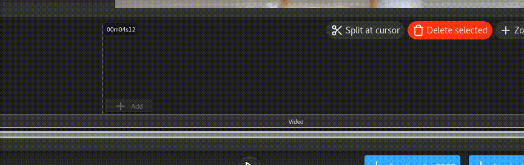
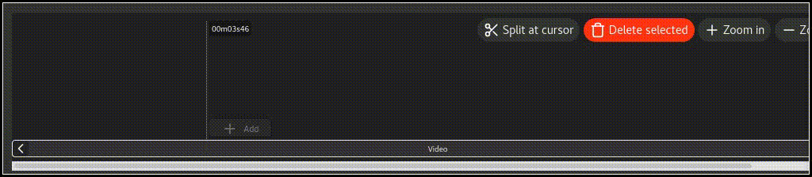
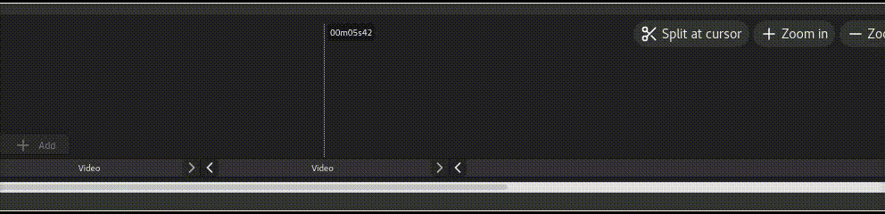
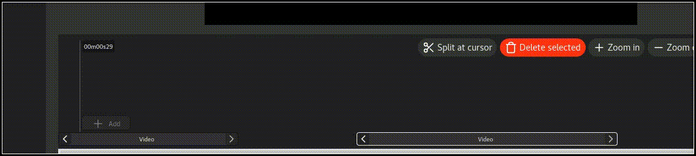

This article will show you how to cut parts of a video and join back the sequences. After a few uses, you will be cutting videos without even thinking about it!
If you haven't already done so, you should add your video by following these
steps:
Adding a video
Then you can come back here.
Click a sequence to select it.
You can also select multiple sequences with Shift+Click.
Click in the sequencer at the time you want to split the video. Don't worry about precision since you can make adjustments later with the sequence chevrons ("<" and ">" buttons).

This will divide your video in 2 parts: before the cursor and after the cursor.
If you want to cut a segment of a video, split a second time.

If you want to remove only the end or the beginning of a video, you can skip this step.
You should have a segment that you want to delete now.
Simply select the segment(s) that you want to delete and click "Delete selected".

Since you now have a hole in your sequences, you might want to move the other part of the video at the end of the first part to create a continuous video.

Pro tip: If you have a lot of sequences to move, there is a tool in the menu in Edit > Select All After Cursor
Now that you learned how to cut parts of a video, the power to edit is in your hands!